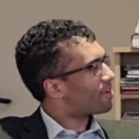

Letero de la vicprezidanto
Karaj membroj kaj amikoj de LEK,
Kun la alveno de printempo, la naturo revekiĝas, kaj ankaŭ ni denove trovas energion en nia komunumo. Mi ekmemoras vortojn de Julio Baghy:
Aŭtun’, vi estas mort’. La viv’ – somer’.
Printempa amo, ne flugu for,
ho estu… restu en mia kor’!
La printempo trenas kun si promesojn pri varmo, kreskado, kaj daŭra konektiĝo – sentoj, kiuj profunde resonadas en Esperantujo. Tio estas tempo por sin malfermi al novaj oportunoj, fortigi amikecojn, kaj antaŭĝui venontajn kunvenojn.
Ĉi-printempe ni bedaŭrinde adiaŭas nian sindonan sekretarion, prof. Renato Corsetti, kies energio kaj amo por Esperanto sentiĝas en ĉio, kion li faris por nia klubo kaj la pli vasta movado. Li restas en niaj koroj, kaj lia laboro por Esperanto daŭre inspiros. La klubo okazigos memorvesperon pri li dum Aprilo. (Pli detala omaĝo troviĝas aliloke en tiu ĉi numero.)
Ni invitas vin al la jarkunveno de LEK, okazonta la 28-an de Marto. Tio estos grava momento por pripensi la estontecon de nia klubo kaj elekti novan estraron. Ni serĉas kandidatojn por la roloj de prezidanto, vicprezidanto kaj sekretario, kaj ankaŭ volontulojn por helpi pri taskoj kiel organizado de ĉeestaj renkontiĝoj aŭ planado de retaj kunvenoj. Se vi interesiĝas, bonvolu kontakti nin antaŭ la kunveno aŭ sciigu vian intereson dum la jarkunveno mem.
Dum progresas la sezono, ni kunportu tiun spiriton de printempa amo – amo por lingvo, kulturo kaj komunumo, restadanta en niaj koroj. Ĉu vi venos al iu ĉeesta evento, ĉu spektos vendredan prelegon per interreto, ĉu simple dialogas afable kun interparolanto per Esperanto, tiu ago iel pliriĉigos nian komunan vojaĝon.
Mi antaŭĝojas baldaŭ vidi vin ie; ĝis tiam, la ĝojo de printempo akompanu vin en ĉio, kion vi faras.
Amike, Gabriel